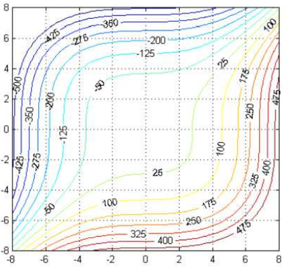

derivative in the direction \(\vec{u}\): \(\displaystyle D_{\vec{u}}f = \nabla f \cdot \hat{u} \)
Warmup
True or False. Let \(\displaystyle \nabla f(1,1) = 3 \hat{x} - 5 \hat{y}\). The sign of the directional derivative of \(f\) in the direction \(\vec{v} = 4 \hat{x} + 2 \hat{y}\) is positive.
Examples
Find the derivatives \(D_{\hat{u}} f\) in the directions indicated.
\( \displaystyle z = f(x,y) = \frac{1}{4} (x^2 + 2y^2 ) + 2 \), in direction \(\hat{u} = <1/\sqrt{2}, 1/\sqrt{2} >\), at point (3,2)
\( \displaystyle z = f(x,y) = e^{-(x^2 + y^2)} \), in direction \(\hat{u} = <\cos 5\pi/4, \sin 5\pi/4 >\), at point (0,0)
\( \displaystyle z = f(x,y) = 3 - \frac{x^2}{10} + \frac{xy^2}{10} \), in direction \(\hat{u} = <1/\sqrt{2}, -1/\sqrt{2} >\), at point (3,-1)
\( \displaystyle z = f(x,y) = x\sin(xy) \), in direction \(\theta = \pi/3\), at point (2,0)
Steepest ascent
Let \(\displaystyle z = f(x,y) = 4 + x^2 + 3y^2\). Let's say we are at point (2,-1/2, 35/4). What is the direction of steepest ascent? steepest descent?
Temperature
Let the temperature at a point in space be given by \(\displaystyle T(x,y,z) = 200e^{-x^2 - 3y^2-9z^2}\).
What is the rate of change of temperature at point \(P_1(2,-1,2)\) in the direction toward point \(P_2(3,-3,3)\)?
Example
Let \(\displaystyle z = f(x,y) = 12 - 4x^2 -y^2\).Let's say we are at point P(1,2,4). What direction can we move in the \(xy\)-plane that has zero change in \(f\) at P?
Graphical Example
At which point below is the gradient most parallel/anti-parallel to \(\hat{y}\)?

(0,4)
(-4,-4)
(0,0)
(6,-2)
Example - Tangent planes to level sets
Let \(\displaystyle f(x,y,z) = xy + yz + xz\). Consider the level set \(f(x,y,z) = 3\). What is the tangent plane to this level set at (1,1,1)? Is (1,1,1) a point on the level set?
Example - alpine roller coaster
An alpine roller coaster is to be constructed along the side of a hill. The hill is modeled by the equation \(z=50-x^2+5xy-2y^2\), where \(x,y\) and \(z\) are measured in meters.
You are a member of the design team. You are tasked with providing information about possible roller coaster track paths at a point (-1,3,16) on the hill.
You are asked to answer the following questions with adequate mathematical justification. Assume the positive \(y\)-axis points north and the positive \(x\)-axis points east.
In what direction is the steepest downward path? Why is this information important?
In what direction is the path level? Why is this information important?
If you angle the roller coaster track due north, will you start to ascend or descend?
If you angle the roller coaster track southeast:
Will you start to ascend or descend?
At what rate?
At what angle above or below the horizontal will the path in that direction begin?
If the roller coaster track is toward the point \((0,5,0)\) on the hill, will you start to ascend or descend? At what rate?